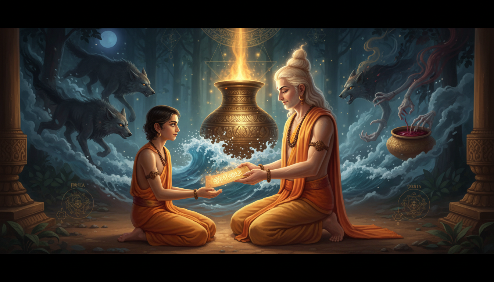

1. The Boy Who Was Sent to Learn How to Undo Death
Start with the assignment, because the assignment is the strange part. The gods did not send a rishi to a hermitage to meditate. They sent a boy to a hermitage to learn the one piece of knowledge that reverses death itself — and they sent him to the one man in the universe who already possessed it and who was the sworn priest of their enemies.

The boy was Kacha. The knowledge was the Mrtasanjivani vidya, the life-restoring mantra. The teacher was Shukra, who is the presiding god of the planet Venus and the preceptor of the asuras. And the story of how the boy got what he went for is not a story of a successful student. It is a story of a boy murdered three times, and of a curse that made his victory unusable.
Kacha is described to be the handsome son of Brihaspati. He is sent by the devas to Shukra's ashrama (spiritual hermitage) to learn about the Mrtasanjivani vidya mantra, the knowledge that allows one to restore life after death. Shukra accepts him as his disciple, and the latter accepts the task of offering him a thousand years of service.
— Wikipedia, Kacha (sage)
Read that last clause again. A thousand years of service. The devas sent their emissary to buy the most expensive secret in creation, and the price was not money, not land, not a favour. The price was a lifetime of uncompleting service to the teacher who was their enemy. Kacha agreed. That is the first thing he achieved, and it is the thing the story never forgets: he was willing.
This is the companion piece to an earlier article in this series on how Shukracharya obtained the Sanjeevani Vidya. That article was about the teacher and how he got it. This one is about the student and what it cost him to learn it — and, more importantly, about the curse that arrived at the end, because that curse is the most usable thing in the whole Kacha cycle for anyone doing remedial work.
2. A Family That Is a Chart: Jupiter, Tara, the Moon, and Mercury
Kacha's family is the first reason this story belongs in an astrology blog, because Kacha's family is not a family. It is a set of planets, and the drama that runs through it is a planetary drama that anyone with a chart will recognise.
His father is Brihaspati — the god of Jupiter, the deity of Thursday, the Guru of all the Devas, the graha that the remedial literature treats as the supreme benefic. The Vedic description of him is worth having exactly:
In the Rigveda, Brihaspati appears in such as the dedications to him in the hymn 50 of Book 4; he is described as a sage born from the first great light, the one who drove away darkness, is bright and pure, and carries a special bow whose string is Rta or "cosmic order" (basis of dharma). His knowledge and character is revered, and he is considered Guru (teacher) by all the Devas.
— Wikipedia, Brihaspati
His mother is Tara — "star", also Taraka and Chandramasi, "lunar", the goddess who personifies the stars in the sky, and the central figure of the Tarakamaya episode. And here the story turns into Jyotish almost without trying:
While married to Brihaspati, she is abducted by Soma (also called Chandra), the moon god; some scriptures also describe Tara's own attraction to Soma. A war breaks out between Brihaspati and Soma over her. Tara, already pregnant, is ultimately returned to her husband and later gives birth to Budha. After another conflict arises over the paternity of Budha, Tara reveals the child's father being Soma.
— Wikipedia, Tara (Hindu goddess)
Budha is Mercury. The Wikipedia page on Budha records the parentage precisely: parents Chandra (father) and Tara (mother), planet Mercury, member of the Navagraha, Wednesday, green, numbers 5, 14 and 23, mounted on a lion and a chariot pulled by eight yellow horses, abode Budhaloka, consort Ila, children Pururavas.
So here is the household, laid out:
- Jupiter (Brihaspati) — the father, the guru of the gods, the benefic who rules the 5th and the 9th.
- Chandra / Soma — the Moon, the intruder, the graha that took the wife and then fathered the son.
- Mercury (Budha) — the son born of that affair, the planet of intellect, learning and speech, the Wednesday graha.
- Kacha — Jupiter's son by Tara, and therefore Mercury's half-brother. The one who went to learn how to undo death.
And then there is the fourth member of the household, the one who is not a graha at all and who is arguably the most consequential figure in the story: Devayani, daughter of Shukra, who becomes Kacha's beloved, and who ends the story with a curse.
Look at what the family actually is, in graha terms. Jupiter and the Moon in a conflict over the same woman, with Mercury born of the quarrel. That is not a metaphor that a later commentator imposed. That is the recorded genealogy. Jupiter is the graha of the ninth house, of the father, of the teacher, of right direction, of dharma and of counsel. The Moon is the graha of the mother, of the mind, of emotion, of the fourth house, of the motherland and the body. A war between Jupiter and the Moon over one woman is a conflict between the house of right direction and the house of the mind — and the son born of it is Mercury, the planet of the intellect that has to mediate between them.
Every person in this story is caught in a remedy. Jupiter needs a good teacher; Kacha is literally the son of the Guru of the Devas and goes to study under the Guru of the Asuras. Moon needs to be pacified; the whole story turns on Tara's abduction. Mercury needs to be given a clean birth; Budha's paternity is disputed for most of his early life and is settled by Tara's own confession. And Venus — Shukra — sits at the top of the arrangement holding the only cure for mortality and teaching it to a boy whose family has no use for it.
3. The Guru Who Left His Own Side
Before you can weigh what Kacha achieved, you have to know what kind of teacher he was, because Shukra is one of the most consequential figures in the entire priestly literature of India, and his career is a story about the transfer of ritual power between enemy camps.
In the Rigveda he is Kavya Ushanas, a wise poet-priest attached to the gods, and specifically to their king Indra:
Several Rigvedic passages (RV 5.29.9, 10.22.6, 1.51.11 and 5.31.8) recount a meeting between Indra, accompanied by Kutsa and the gods, and Ushanas Kavya. These hymns portray Indra seeking his assistance before defeating the asura Shushna. Other hymns credit Ushanas with providing or fashioning Indra's vajra (thunderbolt), the weapon that later becomes Indra's defining attribute; though Tvashta is also referred to as Vajra's fashioner. RV 9.87.3 further attributes to him the discovery of the "secret name of the cows". The hymn RV 5.20.11 suggests that Indra might have rewarded Ushanas for aiding him.
— Wikipedia, Shukra
Note what that is. In the oldest layer, Ushanas is a craftsman of weapons and a solver of problems, credited with the vajra itself and with a secret name. The Taittiriya Samhita (2.5.8.5) records the division of labour between the messengers of the two worlds: "while Agni served as the messenger of the devas, Usana was the messenger of the asuras."
Then comes the pivot, and it is told most fully in the Jaiminiya Brahmana:
The most detailed account occurs in the Jaiminiya Brahmana (1.125–127). It narrates that the prolonged struggle between the devas and the asuras remained indecisive because Brihaspati and Ushana, serving as the respective priests of the two sides, possessed equal ritual power. Indra eventually learned that victory depended upon persuading one of the rival priests to change allegiance. After being enticed with gifts and honours, Ushana abandoned the asuras and joined the devas, providing them with strategic counsel and the ausanasas, thereby ensuring their triumph.
— Wikipedia, Shukra
That is the single most important fact in the background of the Kacha story, and it is a fact about transfer. The war between the devas and the asuras could not be won by armies, because both sides had a priest of equal ritual power. It was won by persuading the priest to leave. Shukra was bought. The Tandya Mahabrahmana gives the mechanism more precisely: the devas won over Ushana with kamadughas — "wish-fulfilling" ritual formulae or gifts — after which he revealed the ausanasas, the vulnerabilities of the asuras, which some scholars read as the "secret of cattles" of Rigveda 9.87.3. And the same text records Ushana acquiring those sacred formulae through penance, and thereby obtaining whatever he desired.
Read that together with Kacha's story and the shape of the thing becomes clear. Shukra was a man who could be bought away. He had left the asuras once already, for gifts and honour. He taught the devas' boy the secret of immortality — and then, when the boy finished, the girl he loved cursed the whole thing into uselessness.
And there is one more layer, which the Mahabharata gives:
The Mahabharata mentions that Ushanas divided himself into two halves: one became the source of knowledge for the devas (gods), and the other for the asuras (demons).
— Wikipedia, Shukra
A teacher who is two people at once. A guru whose knowledge is deliberately split so that neither side holds all of it. And Kacha, the boy sent to learn the half that the devas needed, ends up — because the asuras' sons poison him and burn him and mix his ashes with wine — learning the whole of it, from inside the belly of the man who holds it.
That is not a metaphor for how the story was constructed. That is literally what the story says happened.
4. The Price of the Vidya: A Thousand Years of Service
The initiation is described in one clause and it is worth expanding, because the remedial literature of this tradition is very heavy on counted practice — a number of days, a number of beads, a number of rounds, a number of lamps — and the initiation here is the largest number in the corpus: one thousand years of service.
That number is the article's first real instruction. Everything that follows in the tradition about repetition, about doing the work daily, about not stopping, about the discipline of a mantra that has to be got rather than borrowed, comes out of this shape: you do not receive the vidya. You serve for a thousand years, and the vidya is what is left in your hands at the end.
The teacher's side of the transaction is equally instructive, because Shukra does not simply hand it over. Kacha "is sent by the devas" — meaning he arrives as a representative of a foreign power, on a mission with a political purpose, in the household of the enemy. And Shukra accepts him, which is already a breach of the neutrality that the Jaiminiya Brahmana had made the pivot of the entire cosmic war. The teacher who once deserted one side for gifts is now taking a student from that same side.
And Devayani falls in love with him, and they "become an inseparable couple". So the situation inside the ashram is: the enemy prince's son is sleeping with the teacher's daughter, the teacher's daughter is begging for the boy to be protected from the teacher's own students, and the students are trying to kill him because they have correctly guessed that he is there for the secret.
The asuras, however, are suspicious of Kacha's intentions, guessing correctly that Kacha wished to know the secret of the life-restoring mantra.
— Wikipedia, Kacha (sage)
Note the word the tradition uses: correctly. The asuras were not paranoid. They were right. And they were also the people who, at the end, ended up giving Kacha the whole of the knowledge — because they reduced him to ash and wine and put him in his teacher's belly.
5. Death the First Time: The Wolves and the Deep Forest
The first killing is the simplest, and it is the one that tells you what the story is about.
They kill him when he is deep within the forest and feed him to the wolves.
— Wikipedia, Kacha (sage)
The method is chosen to make the body unrecoverable and unidentifiable. Not a duel, where a body would lie with its weapons and could be claimed. Not a pyre, where the fire is a witness. Wolves. The forest takes him. And this happens "deep within the forest" — away from the ashram, away from Shukra, away from anyone who could intervene.
And the response is:
On both occasions, upon the insistent pleas of his daughter, Kacha is restored to life with the knowledge of the Sañjīvanī by Shukra.
— Wikipedia, Kacha (sage)
So the first time, the teacher revives the boy. And note the mechanism of the request: it is Devayani who pleads. The girl's insistence is what triggers the first resurrection.
6. Death the Second Time: Paste, Seawater, and the Ocean as Dissolver
The asuras escalate, and the escalation is precise and deliberate. The second time they do not hide the body. They erase it:
They pound his body to paste, mixing it with seawater.
— Wikipedia, Kacha (sage)
This is a more sophisticated destruction than the wolves. The forest at least leaves a shape. Paste mixed with seawater leaves nothing: no corpse, no blood, no wound, no place, no date. There is no evidence that a death occurred, and therefore, in the logic of the story, no event that requires a resurrection. It is an erasure, not a killing.
And it is done with seawater — the ocean as the universal solvent. The same ocean that was churned for amrita, the same water that the devas and the asuras fought over, is here the solvent that undoes a person completely.
This is a two-step escalation, and if you read it as a technical sequence rather than a frightening story, the steps are: dissolution into formless matter, and dissolution into the dissolving medium itself. Wolves reduce a body to fragments; paste reduces it to a substance; seawater carries that substance away until nothing is left to be recovered.
And again Devayani pleads, and again Shukra restores him, and again with the knowledge of the Sanjivani.
7. Death the Third Time: Ashes, Wine, and the Belly of the Teacher
The third killing is the cleverest thing in the story, and it is the reason the whole cycle exists.
In their third attempt, the asuras burn the body of Kacha, mix it with ashes and wine, offer it to Shukra to drink. When dusk falls, and Shukra observes that his disciple has not yet arrived, he deduces that the latter is in his belly. Finding himself in a dilemma, the acharya teaches Kacha the Mṛtasañjīvanī mantra, and when the disciple bursts out of Shukra's belly, killing him, he revives his acharya by chanting the mantra.
— Wikipedia, Kacha (sage)
Read the whole mechanism without hurrying.
- The asuras do not destroy Kacha this time. They use him.
- They burn him, mix the ashes with wine, and give the mixture to Shukra to drink. A father's grief is turned into a delivery mechanism.
- At dusk, when the disciple has not arrived, Shukra deduces where he is. He works it out. The teacher does not search. He reasons.
- "Finding himself in a dilemma" — because the ritual position is impossible. He holds a dying man inside himself and the man he is dying of is his student. He cannot separate them without destroying both.
- So he teaches. He transmits the Mrtasanjivani mantra from inside his own body, to the ear of the student who is inside his body, because there is no other place to teach from and no other teacher available.
- Kacha bursts out of the belly, killing Shukra.
- And then — with the knowledge he has just received, from the mouth of the man whose body he was inside — Kacha revives his own teacher.
Stop and look at the shape of that. The man who could not use his own art — because Devayani's curse comes later — first uses it, in the very act of learning it, to bring back the person who taught it to him. The art is proved the moment it is received. The examination is the teacher's own death.
And there is a detail in that which is worth a lifetime: the teacher taught it because the dilemma forced him to. Nothing in the first two deaths had compelled the full disclosure. It took the ultimate threat — the destruction of the one person in the universe who could teach — to make Shukra give over the whole thing, to a student he did not trust, who was sleeping with his daughter.
This is the whole occult logic of the Kacha cycle in one gesture: a knowledge that cannot be given safely must be transmitted through a crisis, and it is transmitted into the student who will then have to save the giver. The guru is not protected by withholding. The guru is only protected by the student's readiness.
His objective achieved, he stays under the tutelage of Shukra until his education is completed.
— Wikipedia, Kacha (sage)
Note the last clause. He revives Shukra — and then he stays. He does not take the knowledge and run. He finishes the thousand years.
8. The Curse: The One Who Knew the Cure and Could Not Give It
And then the story does the thing that makes it worth an entire article, which is to take the victory away.
His education complete, Kacha takes his leave from Devayani and her father, and starts to journey back to Devaloka. Devayani follows him for a long distance, and requests that he marry her. Kacha reveals to her that Shukra had told him that since he had emerged from the acharya's belly, he is deemed to be his son, and that made Devayani his sister. Furious at the rejection, Devayani curses him that he would be unable to employ the art of the life-reviving mantra himself. Kacha, in turn, curses her that none of the sons of sages would marry her. After the incident, they parted ways, and never met again.
— Wikipedia, Kacha (sage)
Take the shape of it. Kacha achieves the thing. He has the vidya. And he is forbidden to use it. The man who can revive the dead is not permitted to revive anyone.
And notice the reason, because the reason is the most interesting part of the story and it is not a random curse. He is the son of Shukra. He came out of his teacher's body. The tradition's own logic of filiation — a pupil who is born from the guru's belly becomes the guru's son — has turned the inheritance of the vidya into an incest taboo. The knowledge can pass, and it passes, but the hand that holds it is now a hand that is legally the teacher's own son, and the teacher's daughter is his sister, and she will not have him.
The tradition then balances it with a counter-curse, which is a lovely piece of narrative engineering: Kacha curses her that none of the sons of sages would marry her. So the woman who cannot marry the man she loves ensures that she cannot marry any man she might otherwise love. Both of them are locked out. Neither gets what they wanted.
Now hold this against the article's own frame, because this is the part that readers of a remedies blog need most. Kacha is the archetype of the person who has the cure and cannot apply it. He is the practitioner who knows the mantra perfectly and is not allowed to say it. He is the astrologer who has diagnosed the dosha accurately and cannot act on it — because of a vow, a lineage restriction, a professional boundary, a family situation, a fear of what happens if he tries.
The tradition does not treat this as a defeat. It treats it as the shape of the achievement itself. Because look at what he actually did, read again from the source:
He is known for learning Mṛtasañjīvanī vidyā mantra (a hymn for reviving the dead) from his guru Shukra. However, he is unable to revive devas due to the curse of Shukra's daughter, Devayani.
— Wikipedia, Kacha (sage)
The summary sentence of the whole Wikipedia article puts the acquisition and the prohibition in the same breath. The tradition's judgement is that learning the vidya and being unable to apply it are the same event. The knowledge was the point. The prohibition was the price. And what Kacha is consequently famous for — the thing the article about him will actually be remembered for — is that he learned it.
9. The Occult Register: Amrita, Soma, Dhanvantari, and the Churning
Now to the substance the vidya belongs to, because "reviving the dead" in this tradition is not a metaphor and it is not a philosophical claim. It is a substance, and the substance has a name and a grammar.
The name is amrita.
Amrita or Amruta is a concept in Indian religions denoting "immortality" and, by extension, the nectar or elixir of immortality. The term is cognate with, and shares similarities with, ambrosia, both deriving from a common Proto-Indo-European source. Its earliest occurrence is in the Rigveda, where amrita is one of several terms associated with soma, the drink of the devas. It also occupies a central place in the account of the Samudra Manthana, in which possession of amrita and the immortality it confers becomes the object of conflict between the devas and the asuras.
— Wikipedia, Amrita
Amrita is composed of the negative prefix, a from Sanskrit meaning 'not', and mṛtyu meaning 'death' in Sanskrit, thus meaning 'not death' or 'immortal/deathless'.
— Wikipedia, Amrita
Not-death. That is the etymology, and it is the etymology of the entire Kacha story. Amrita is not a substance that is against death. It is a substance named for the negation of death. A mantra is not a thing that fights off mortality. It is a formulation of the negative of mortality.
The cognate word in Greek is ambrosia — from the same Proto-Indo-European root ṇ-mṛ-tós, "un-dying". Both languages independently named the drink of the gods by saying, in effect, not-mortal*. That is not a coincidence of theology. It is what happens when two languages both need a word for the substance that removes death: they both reach for the negative.
And where does amrita come from? The churning:
The Samudra Manthana explains the origin of the elixir of eternal life, amrita. ... The devas formed an alliance with the asuras to jointly churn the ocean for the nectar of immortality, and to share it among themselves. However, Vishnu assured the devas that he would arrange for them alone to obtain the nectar. ... Mount Mandara was uprooted and used as the churning rod.
— Wikipedia, Samudra Manthana
Notice the structure of that: the substance of immortality can only be produced by two enemies gripping the same rope and pulling in opposite directions. The devas cannot make it. The asuras cannot make it. The alliance is the manufacturing process. That is the Samudra Manthana's own claim about the most valuable substance in existence, and it is the same claim the Kacha story makes about the vidya: the cure for death is manufactured in the collision between the side that wants it and the side that holds it.
And out of the churning came the physician of the gods:
Dhanvantari — Physician of the devas, god of Ayurveda, Vaishnavism, abode Samudra, symbols Amrita and Leech, mount Lotus, festival Dhanteras.
— Wikipedia, Dhanvantari
Amrita and the Leech. The nectar and the blood-letter. The Dhanvantari mantra on the same page is worth having whole, because it names the operation explicitly:
Om Namo Bhagavate Vasudevaya Dhanvantraye Amrutha Kalasha Hastaaya Sarva Maya Vinashanaya Trailokya Nathaya Shri Mahavishnave Namaha
Amrutha Kalasha Hastaaya — the one who holds the kalasha of amrita. Sarva Maya Vinashanaya — the destroyer of all maya. A physician of the devas who is also a Navagraha-adjacent figure of the same order as Shukra, and who carries the same substance in the same vessel.
And the man who carries the counter-substance, the thing that undoes death from the other side, is Rudra:
Rudra — Vedic storm and wind deity; epithet of Shiva. God of Storm, Wind, Medicine, Hunt, Animals, Life and Yagna. Mantra: Mahamrityunjaya Mantra, Om Namo Bhagavate Rudrāya. Texts: Shri Rudram, Rig Veda. Pashupati.
— Wikipedia, Rudra
Mahamrityunjaya. The Great Killing-Free One. The mantra of the god of medicine and life whose very name means not-death, and who is the deity whose mantra the remedial literature uses against the fear of death and against the transit of the graha that brings it.
Hold the two together: Kacha's Mrtasanjivani vidya is the mantra that revives the dead, held by the guru of Venus, who got it through penance. Rudra's Mahamrityunjaya is the mantra of Shiva, held by the father of the eighth form, which the tradition uses to ward off the fear of death. Same negation, same root, two directions: one is what you do after the death has happened, the other is what you do so it does not.
And the ritual frame in which all of this is transmitted is already in the Rigveda, in the same Mandala where the story of Kacha's guru is embedded. The Rigveda's tenth Mandala — the last book, in later language, addressed to Agni, Indra and various other deities — contains the death hymns (10.10–18), and the Rigveda article is explicit about their function:
The marriage hymns (10.85) and the death hymns (10.10–18) still are of great importance in the performance of the corresponding Grhya rituals.
— Wikipedia, Rigveda
Grhya rituals. The domestic rites. The rites you perform at home, for a death in the family. The vidya Kacha stole was never only a myth; it was a set of instructions that a household performed over a body, and the tenth Mandala of the Rigveda is where the house rites for the dead are preserved.
10. What Death Is in the Chart: Sade Sati, Saturn, and the Seven and a Half Years
Now the astrology, and this is the part that makes the article worth writing for a remedies blog. Because if you want to know what "the fear of death" looks like in a chart, the tradition has a precise answer, and the answer is a transit with a number in it.
Sade Sati — Saturn's seven and a half years:
In Hindu astrology, Sade-Sati is the 7 + 1/2 years long period of Shani (Saturn). This is a period with many challenges, but also a time of great achievements and recognition.
— Wikipedia, Sade Sati
The period of Sade-sati starts when Saturn enters the zodiac sign immediately before the zodiac sign of Moon at the time of the birth of the individual. That is, if the Moon sign (Ayamsha) at the time of birth of the native was Taurus, then the Sadesati will begin when Saturn enters sign Aries. The Sade-sati will continue while Saturn transits over this sign and the next two signs, i.e. the birth sign and the sign after it. Saturn spends around 2 + 1/2 years in each sign. To cross these three signs it takes about 7 + 1/2 years. Thus the name Sadesati which literally means seven and a half.
— Wikipedia, Sade Sati
Seven and a half years. Three signs. Two and a half years per sign. And there is a second, nakshatra-based calculation that gives you the same window with a different edge:
Of all transits in traditional Indian, Vedic astrology, which is based on the sidereal zodiac as against the tropical zodiac, Saturn transit is a solely emotional / mental transit. In that, it is the only transit that affects the emotions. In some ways of computation, Sade Sati is said to begin when the Saturn is transiting the asterism 45 degrees prior to the position of the natal moon and ends when Saturn transits the asterism 45 degrees past the position of the natal moon.
— Wikipedia, Sade Sati
Read that sentence carefully, because it is the hinge of the whole remedy tradition and it is very often quoted without its consequence. Saturn transit is the only transit in the sidereal zodiac that affects the emotions. Not the most common one. The only one.
So when a person comes to a remedy site and says "I am afraid," the tradition is not being vague. It is pointing at a graha. And the specific remedy set that the tradition attaches to that seven and a half year window is documented, and it is extremely specific — this is a remedy tradition with counts, colours, weekdays, substances and a saint:
It is believed that worshipping Lord Hanuman and Lord Ganesha greatly reduces any malefic effects of Sade Sati. ... In North India, and in much of India, Lord Hanuman is worshipped. Specifically Hanuman Chalisa is a considered one of the most potent remedies against SadeSati. Lord Hanuman is considered an avtar of Lord Shiva by some. Hence worship to Lord Shiva is also recommended. In South India, while the Iyers / Shaivites worship Hanuman, many Iyengars / Vaishnavites, also worship Garuda, Lord Narasimha (e.g. Sri Sanaiscara krta Sri Narasimha Stuti) as one of the remedies for Sade Sati. Many Palakkad Iyers believe that worshipping Lord Ayappa for a Mandala (45 days) is a potent remedy as well in that it is believed that Lord Ayappa shows his beneficence by reducing the suffering for just a Mandala. Chanting of Vishnu Sahasranamam, Garuda Pattu (10 liner to Garuda, the King among Birds) and other hymns like Sani Vajra Panjara Kavacham are also considered effective remedies. Fasting is said to please Lord Saturn, especially on the day he rules (Saturday). Hence some remedies recommend fasting on Saturdays.
— Wikipedia, Sade Sati
Saturn transit being a predominantly mental / emotional transit, as stated above, it follows that worship of Lord Shiva, the prognosticator of emotional / mental health, is strongly recommended with the preferred prayer being the Mahamrityunjaya Mantra Japa. Many people light lamps with sesame oil as a remedy. Others donate sesame oil, pulses like urad (as a remedy to Lord Hanuman) and other forms of charity.
— Wikipedia, Sade Sati
Everything is in there. The weekday (Saturday). The substance (sesame oil). The grain (urad). The saint (Hanuman, Ayappa, Garuda, Narasimha). The count (a Mandala, 45 days). The hymn (Vishnu Sahasranamam, Garuda Pattu, Sani Vajra Panjara Kavacham). The lamp. The fast. The charity. And the presiding prayer: the Mahamrityunjaya japa, the mantra of the god whose name is not-death.
Now put the Kacha story next to that window and it becomes very sharp. The Sade Sati is a seven-and-a-half-year transit in which the graha of time, of labour, of restriction and of delay moves over the Moon — the graha of the mind, of the mother, of emotion — and the only transit in the zodiac that touches the feelings. It arrives, it does its work, it leaves, and it takes seven and a half years to cross.
And what is the traditional response to a transit like that? A ritual that runs for a counted period, at a set hour, on a set day, with a set substance, aimed at one graha. Which is exactly the shape of Kacha's thousand years of service, and of the vidya's own transmission.
And there is one more alignment, and it is the reason Jupiter is in this article at all. Punarvasu — the seventh nakshatra, the one that rules Jupiter's own house in the zodiac:
Punarvasu, meaning "the twin restorers of goods", is the 7th nakshatra (lunar mansion) in Indian astronomy. It corresponds to the two brightest stars in the constellation of Gemini, Castor and Pollux. ... In Hindu astrology, Punarvasu is ruled by Jupiter (Guru) and symbolized by a quiver of arrows, signifying renewal, restoration, and return. Its presiding deity is Aditi, the mother of the gods, representing nurturing, abundance, and universal support. This nakshatra is associated with optimism, resilience, and the ability to recover from adversity.
— Wikipedia, Punarvasu
"The twin restorers of goods." A quiver of arrows — ammunition held in reserve, meaning renewal, restoration, return. Jupiter rules it. And it is the birth nakshatra of Rama, whose birth the same page describes with a full horoscope — Jupiter with the Moon in the ascendant in Cancer, the benefics at their height, on Punarvasu, in the ascending part of the day.
Kacha is the son of that Jupiter. Kacha's story is about a thing being destroyed and made whole again — three times — and then about the one thing he could never make whole again. Restoration and return. The nakshatra of Jupiter's restoration is a quiver of arrows held in reserve, and the boy who learned to unmake death was Jupiter's own.
And then there is Pushan, who closes the frame:
Pushan is a Hindu Vedic solar deity and one of the Adityas. He is the god of meeting. Pushan is responsible for marriages, journeys, roads, and the feeding of cattle. He is a psychopomp (soul guide), conducting souls to the other world. He protects travelers from bandits and wild beasts, and protects men from being exploited by other men. He is a supportive guide, a "good" god, leading his adherents towards rich pastures and wealth.
— Wikipedia, Pushan
Pushan is the soul-guide. He conducts souls to the other world. And Kacha learned the art of bringing souls back. The same divine economy, from the two ends. Pushan walks the road out; Kacha is the one who can reverse the crossing. A boy with a quiver of arrows behind him, walking the road the psychopomp walks, learning how to walk it backwards.
11. The Working Form: A Remedy With Numbers In It
The working form: the count first, because the count is the teaching. Kacha's price was a thousand years of service and the vidya was the thing left in his hands at the end. Every remedy in this tradition that is worth doing is counted, and the counts are not decorative. Sade Sati is 7 + 1/2 years. Saturn takes 2 + 1/2 years per sign. A Mandala is 45 days. The Mrtyunjaya is japa'd in fixed rounds. So before anything else: write down the date Saturn entered the sign before your Moon, and the date it will leave the sign after it. Then you have a window with a beginning and an end, and the window is where the work gets done. Everything below happens inside that window.
The working form: the weekday. Saturn rules Saturday, and the tradition attaches the fast to the day the graha rules — "fasting on Saturdays", and the same passage records lighting lamps with sesame oil and donating sesame oil and urad. So the operational unit is: one Saturday, one sesame-oil lamp, one act of charity. That is the minimum viable rite and it is repeatable. Do not build a bigger practice than you will keep.
The working form: the japa, and the deity. The standing remedy for the emotional transit is the Mahamrityunjaya Mantra Japa, and the tradition attaches it to Shiva, "the prognosticator of emotional / mental health", with Hanuman — the deity the Sade Sati article names first of all — as the central deity of the window, and Hanuman Chalisa as the single most potent remedy named. Note that Hanuman is in the same sentence as Shiva, because "Lord Hanuman is considered an avtar of Lord Shiva by some", which is why the North Indian remedy and the South Indian remedy can be the same rite. Recite to the lamp, not to yourself. The flame is the route.
The working form: the three deaths, as a structure for the remedy. Kacha was destroyed three times and each destruction was more total than the last: wolves, then paste and seawater, then ashes and wine. A remedy regime should escalate in the same way rather than being flat. So: first month, the small deaths — the lamp, the charity, the Saturday fast, and name the thing that is being destroyed (the fear, the old identity, the useless form). Second month, the dissolution — the paste and the seawater: give away or formally end the thing you have been calling "my situation", and take a bath, literally, at the end of it; a ritual of ending done with water. Third month, the burning — the fire rite: what is left, the ash, is offered. On the third month, the thing is not in your hands to give away. It is fuel. This is the Agnihotra logic in a domestic key, and it is why the tradition's fire rites exist at all: the third stage is the one that works, because it converts rather than transfers.
The working form: the belly. The place where Kacha received the vidya was the inside of the man who taught it. The working form of that, in remedial practice, is the lamp: the light goes into the wick, the oil goes into the wick, and the wick is consumed to make the light. Nothing useful ever happens on the surface of the flame; the whole work happens inside the wick, in the dark, where the flame cannot see itself. When you recite to a sesame-oil lamp, you are not aiming your voice at it. You are putting the mantra into the wick. Let the oil go. Let the wick shorten. That is the third death in miniature, and it is the only one that produces light.
The working form: the half-knowledge. Shukra divided himself, and the Mahabharata says one half became the source of knowledge for the devas and the other for the asuras. And Kacha's curse was that he could not use the whole of it. So the working form for a person who has partial knowledge of their own condition — half a remedy, half a chart, half the information — is not to go looking for the complete version. It is to split deliberately and usefully: do the half you know completely, and hand the other half to someone who has the other half. This is how the tradition actually works, and it is why the same remedy changes hands so much. A practitioner with the vidya but not the permission (Kacha) and a practitioner with the permission but not the vidya (the household that can act but does not know) are the same person. Find your other half. The tradition's own solution to a broken remedy is to split it further.
The working form: the nakshatra of restoration. Punarvasu is Jupiter's, it is the quiver of arrows held in reserve, and it means renewal, restoration and return. So: when you are inside a seven-and-a-half-year Saturn window, the arrows are the reserve — the capacity you have not yet spent. The remedy is not to spend more. It is to identify what you are holding in reserve and to aim it deliberately at the one thing under pressure. A quiver of arrows means ammunition loaded and ready, and the classical failure of the Sade Sati period is firing all of it at nothing, in every direction, over seven and a half years. Pick the one target. Keep the rest.
The working form: the Pushan half — the road, and the one-way traffic. Pushan is the psychopomp and the god of roads, who conducts souls to the other world, and who protects travellers from bandits and wild beasts and protects men from being exploited by other men. Kacha is the one who can bring a soul back. So the remedy pair for the transit is: walk. Literally, on Saturdays, one road you know, at a fixed time, in daylight if you can manage it — Pushan's protection is specifically for travellers. And do not accept being exploited this week. Pushan's roster is not abstract. He is "the god who makes men not easy to exploit". During a seven-and-a-half-year transit, exploitation is the characteristic hazard, not disaster. Pushan, with his arrows, is the deity of the person who is walked upon.
The working form: the impossible ask. Kacha's achievement was not the vidya. It was learning that he could not use the vidya, and finishing anyway. There is a version of the remedy tradition that asks a person to perform the rite they have no right to perform, or to trust a teacher who has already been bought once, or to say out loud what they have been told not to say. The tradition's verdict on this is in the story: it will go wrong in a way that turns out to have been the point. The third death was the failure of the asuras, and it produced the only complete transmission. Do the thing that looks like the mistake. Then finish the thousand years.
The working form: the finish the thousand years. "His objective achieved, he stays under the tutelage of Shukra until his education is completed." He revives his teacher and he stays. This is the instruction the story ends on, and it is the one most remedies skip. A remedy that ends the moment the crisis passes is not a remedy; it is a treatment of the symptom. Set a completion date at the start — the day Saturn leaves the sign after your Moon, or the fortieth day, or the forty-fifth — and work to it, because the tradition says the thing that was received is not received until the service is finished.
12. What This Is, and What It Is Not
The hard claims are documented and checkable. That Kacha is the son of Brihaspati and Tara; that Brihaspati is Jupiter and Thursday's deity and the Guru of all the Devas; that Tara was taken by Soma and that Budha, Mercury, was born of that union; that Kacha was sent by the devas to Shukra to learn the Mrtasanjivani vidya for a thousand years of service; that the asuras killed him three times in the specific ways recorded; that he was taught the mantra from inside Shukra's body, burst out, killed his teacher and revived him; that Devayani cursed him so that he could not use the art himself and he cursed her in return — all of these are on the cited Wikipedia pages and can be checked in a minute.
The mythology is a myth, and it is not being used as history. The asuras' killings, the burning, the belly and the curse are narrative elements from the Mahabharata, the Matsya Purana and the Agni Purana, in which the narrative of Kacha is also mentioned. They are not documentary claims, and the sources differ in detail — this article has not smoothed them over.
The astrology is the tradition's own working language, and it is not a physics. The Sade Sati calculation, the 2 + 1/2 years per sign, the nakshatra alternative with 45 degrees either side of the natal Moon, the assignment of Punarvasu to Jupiter, the remedy set of lamps and fasts and charity and japa — these are the received practice of Jyotish and of the grhya and srauta ritual literature, presented as such. No tradition that asks you to recite a formula should also be asked to prove the formula by statistics.
And the honest caveat. The Mahamrityunjaya japa will not bring back a person who has died. Nothing in this article claims it will, and the story does not claim it either: Kacha's vidya worked inside the world of the story, and its one great documented use was the revival of the teacher whose body it was inside. What the tradition actually claims, and what the story is actually shaped to demonstrate, is narrower and more usable than a miracle: that death is a state that can be reversed by knowledge held by a specific person in a specific relationship, and that the reversal is expensive, and that it usually costs the holder the ability to use it. That is a truer description of what most people call recovery than any promise of resurrection, and it is the shape of the Kacha cycle exactly.
The tradition's own summary of the whole story is two clauses long — he learned it, and he could not use it — and it puts them in that order, deliberately. Learning first. Use second, if you are lucky. The thousand years first, the vidya after.
And the reason the story has stayed alive is not that it promises immortality. It is that it says, plainly, in a boy's body and a girl's curse, that a thing can be destroyed past all recovery and still be brought back, and that the one who brings it back may be the one who is not permitted to. That is the Kacha cycle's whole gift, and it is why the verse about the quiver of arrows held in reserve is the right nakshatra to end on: renewal, restoration, return — the ammunition kept, the shot not yet fired, and the seven and a half years still running.
Sources
5. Tara (Hindu goddess) - Wikipedia)
16. Jupiter (astrology) - Wikipedia)
- Shukra - Wikipedia
- Shukracharya - Wikipedia
- Brihaspati - Wikipedia
- Devayani - Wikipedia
- Budha - Wikipedia
- Amrita - Wikipedia
- Samudra Manthana - Wikipedia
- Dhanvantari - Wikipedia
- Rudra - Wikipedia
- Rigveda - Wikipedia
- Sade Sati - Wikipedia
- Punarvasu - Wikipedia
- Pushan - Wikipedia
- Navagraha - Wikipedia
- Nakshatra - Wikipedia